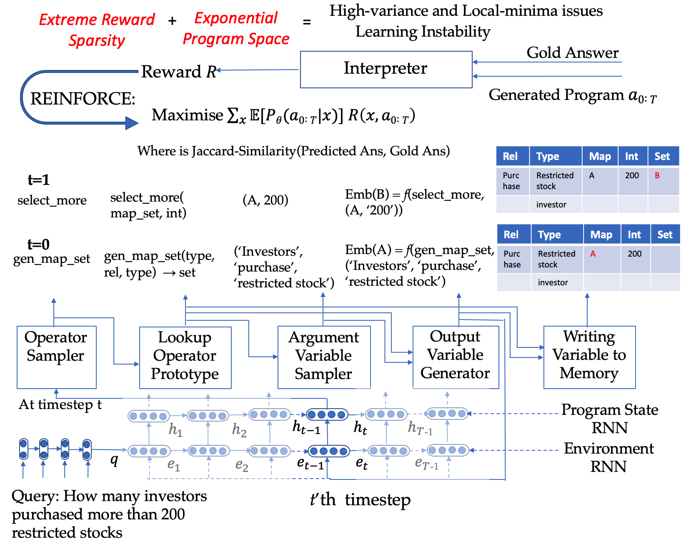
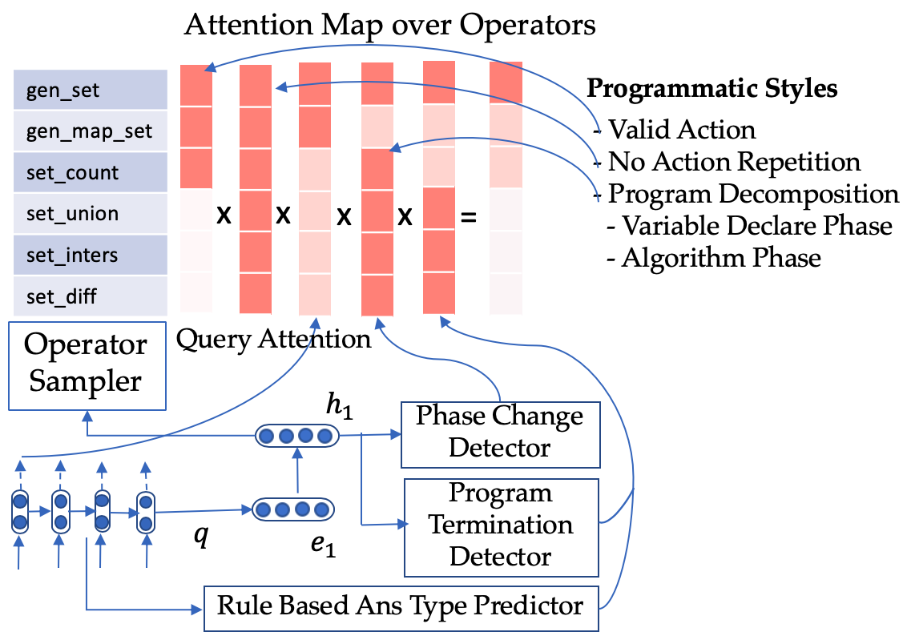
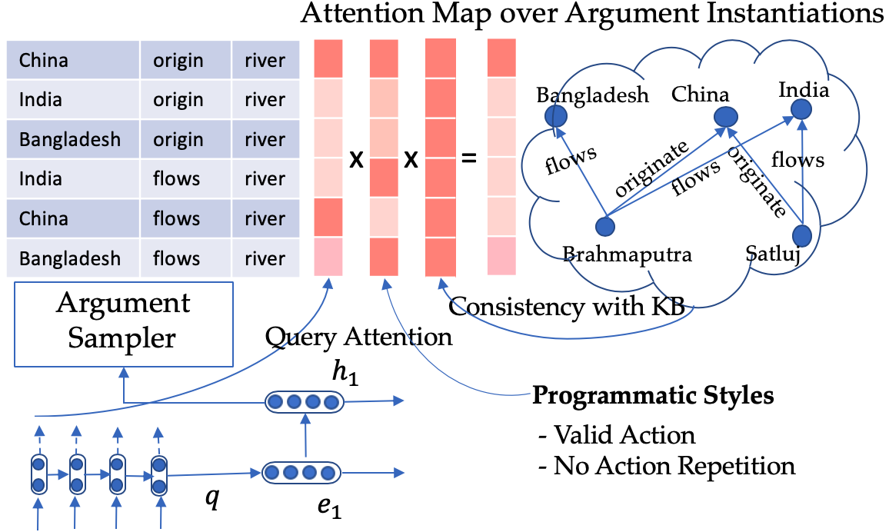

Complex Imperative Program Induction with Terminal Rewards
Complex Forms of KB based Question Answering in real world problems
Question answering (QA) is a core problem in AI; almost every interactive task involving natural language can be modeled as a QA problem. For e.g. a QA model should be able to answer the following questions
‘Can Tazocin or Zosyn be used intravenously to treat renal problems in pregnant women?’ (in the healthcare domain)
‘How many investors purchased restricted stock within a quarter of opening their account?' (in finance domain)
‘Which of the last five movies by the Russo Brothers gained most positive sentiment from the public?’ (in open domain)
‘Which countries have more rivers and lakes than Brazil?‘ (Geographical domain)
Traditional and Contemporary Ways of Solving QA
In the recent years the proliferation of deep learning has revolutionized the modeling of QA tasks, taking away the dependency on poorly scalable human-intensive rule based models and ushering a new era of learning neural representations of the query and its transformation to reach the answer.
However such models still are prone to making blatant mistakes, especially as queries become more and more complex and even when it answers correctly, the reasoning followed by it is not interpretable by end users.
Neural Program Induction for Complex Tasks
Rather, a more intuitive way of approaching a complex task like QA would be to learn to deconstruct it into a sequence of simpler steps, as humans usually do. Motivated by this, researchers in the deep learning era, developed a new learning paradigm, called Neural Program Induction, through which the AI model can be taught to procedurally decompose a complex task into a program i.e. a sequence of atomic actions, which on execution will lead to the answer.
However research on this paradigm has been restricted to simpler tasks like sorting or addition of numbers or simple multi-hop QA over small database tables or knowledge bases, and more importantly under impractical assumptions that the true program is provided as supervision during training by an Oracle.
Our Contribution: Weak Supervised Neural Program Induction for Complex KBQA
Considering these practical limitations, we made a very first attempt at training a model, Complex Imperative Program Induction from Terminal Rewards (CIPITR) to answer complex questions, without either of the constraints used in the past.
Firstly the questions can be complex; requiring sometimes 7-12 steps of reasonings of different flavors, while some steps might require logical reasoning, other steps might need comparative or quantitative analysis.
Secondly the questions need to be answered based on a large scale knowledge base of over 50 million facts.
And thirdly and most importantly, the model is trained with only the question-answer pairs as supervision and can learn to induce program without the need for the oracle program during training.
Challenges Faced by CIPITR
For a complex question like ‘How many investors purchased restricted stock within a quarter of opening their account?’ the model has to first understand that the query is talking about concepts like ‘investors, ‘restricted stock’, ‘quarter’ and relations between concepts like 'purchased’ and ‘opening’ and then map them to facts in the Financial Knowledge Base. Even when this is done perfectly, the space of possible programs induced is exponential (~10^19), out of which only a few can yield a positive reward. For e.g.
CIPITR has to first find out which investors opened account, and then which of them purchased restricted stock.
Next it has to find the time of purchasing and opening account and then apply the time constraint of a quarter and finally count the number of such investors.
Only if this decomposition was correctly done, the model would reach the correct answer and get some positive reward.

Overcoming the challenges in CIPITR through Neural Symbolic Reasoning
This extreme reward sparsity compounded by the sheer size of the program space increases the variance of the model resulting in local minima issues and learning instability. In order to pragmatically search in this combinatorial space of possible programs, the neural model has to incorporate generic programming rules, just as human programmers do, as symbolic constraints in its search. Along with that it should also be able to incorporate task or schema level constraints, to ensure that the programs generated are indeed consistent with the background Knowledge Base (KB) and can generate a meaningful answer.

Incorporating symbolic constraints for sampling meaningful operators

Incorporating symbolic constraints for sampling meaningful instantiations of arguments. Example shown for a question “Which rivers originate in China and flow through both India and Bangladesh?”
Performance of CIPITR in comparison to contemporary Program Induction Models
Overcoming these challenges, CIPITR scored at least 3x higher than the competing systems for moderately complex queries requiring 2–5 step programs.
And on one of the hardest class of queries (comparative reasoning) with 5–10 steps, CIPITR outperformed state-of-the-art neural program induction models by a factor of 89 times.
Applicability of CIPITR
This makes CIPITR one of the very first successes at widening the applicability of complex program induction paradigm to various real-world settings, by eliminating the need for oracle program supervision during training. And it also shows significant potential in pushing the frontiers of complex reasoning tasks in various settings, like answering questions or conversing strategically over multiple modalities (like text/images/videos) in a more human-like fashion.
This research on Complex Program Induction for Querying Knowledge Bases in the Absence of Gold Programs has been published in MIT Press Journals, and will be presented at this week’s ACL Conference in Florence, Italy.
CodeDemo